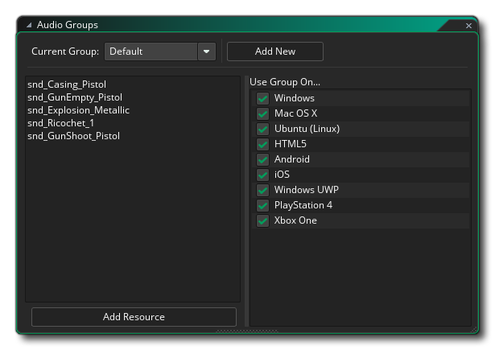

Le gestionnaire de groupe audio est disponible dans le menu Outils de l'EDI. Ici vous pouvez ajouter, supprimer et renommer des groupes audio, ainsi que définir leurs options d'exportation de plate-forme. GameMaker Studio 2 vous permet d'assigner chacune des ressources audio (effets sonores et musique) à différents groupes audio pour essayer d'optimiser le nombre de sons joués à un moment donné, ainsi que de contrôler davantage les plates-formes qu'ils utilisent. sont exportés vers. Pour définir un groupe audio, vous devez cliquer  sur le bouton Ajouter un nouveau qui va créer un nouveau groupe que vous pouvez ensuite nommer. Pour changer de groupe, cliquez sur
sur le bouton Ajouter un nouveau qui va créer un nouveau groupe que vous pouvez ensuite nommer. Pour changer de groupe, cliquez sur  dans le menu déroulant et sélectionnez celui que vous souhaitez modifier.
dans le menu déroulant et sélectionnez celui que vous souhaitez modifier.
Pour ajouter un son à un groupe audio, vous devez ouvrir l' éditeur de son pour ce son, puis sélectionner le groupe à partir de l'option que vous y trouverez. Une fois que vous avez ajouté un son à un groupe audio personnalisé, vous pouvez utiliser cette fenêtre pour choisir de manière sélective la plateforme sur laquelle exporter le son. Il se peut que par défaut vous ayez tous vos sons de la plus haute qualité, mais pour HTML5 (par exemple), vous voulez utiliser un fichier audio de qualité inférieure pour utiliser moins de mémoire. Dans ce cas, ajoutez les fichiers de qualité inférieure à GameMaker Studio 2, puis affectez-les à un nouveau groupe audio. Vous devez ensuite sélectionner ce groupe audio dans le menu déroulant et le définir pour exporter uniquement vers HTML5, puis supprimer l'exportation HTML5 des options d'exportation de groupe audio de qualité supérieure. Il est important de noter que vous ne pouvez pas modifier les options d'exportation pour le groupe audio "par défaut" et qu'il sera toujours exporté vers toutes les plates-formes disponibles lorsque vous créez un package de jeu final.
Une fois que vous avez défini les groupes audio et les sons assignés, vous pouvez les voir dans la liste à gauche lorsque vous sélectionnez le groupe. Il y aura toujours un groupe audio "par défaut" disponible et tous les sons qui sont dans ce groupe seront toujours inclus dans le paquet de jeu pour toutes les plateformes et ils seront tous chargés en mémoire au démarrage (sauf si marqué comme "streamé" dans les propriétés de l'éditeur de son), mais lorsque vous créez un groupe audio personnalisé, les fichiers qui y sont ajoutés ne seront pas chargés en mémoire jusqu'à ce que vous appeliez la fonction audio_group_load(). De cette façon, vous pouvez contrôler à tout moment l'audio qui réside en mémoire. Notez également que pour toutes les fonctions de groupe audio, vous devrez fournir la valeur de l'ID du groupe audio. C'est simplement le nom que vous avez donné au groupe audio.
Les groupes audio sont également liés aux paramètres Configurations. Lorsque vous sélectionnez une configuration, vous pouvez ouvrir la fenêtre Groupes audio et sélectionner les cibles d'exportation dans la partie droite de cette configuration, puis modifier les configurations modifiera ces cibles de sortie. Notez que vous ne pouvez pas définir les ressources sonores sur des groupes différents sur une base par configuration, uniquement la cible d'exportation pour le groupe donné.